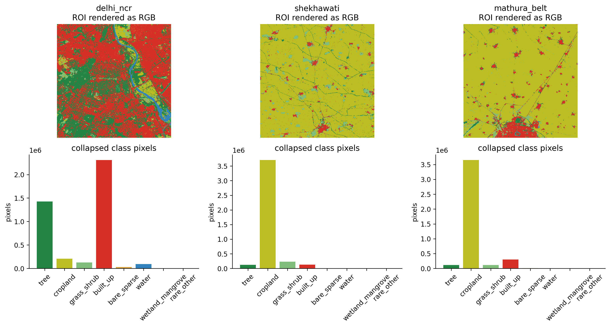
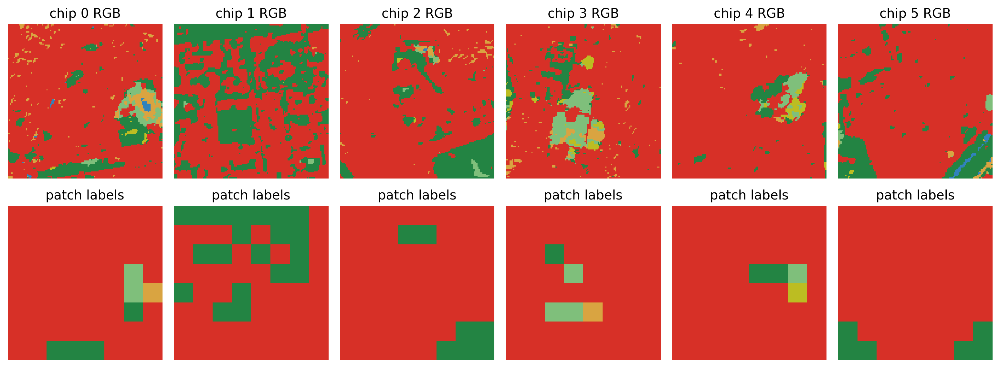
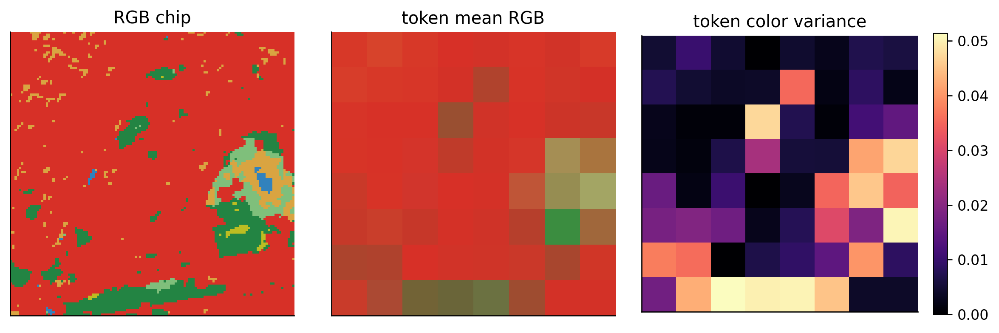
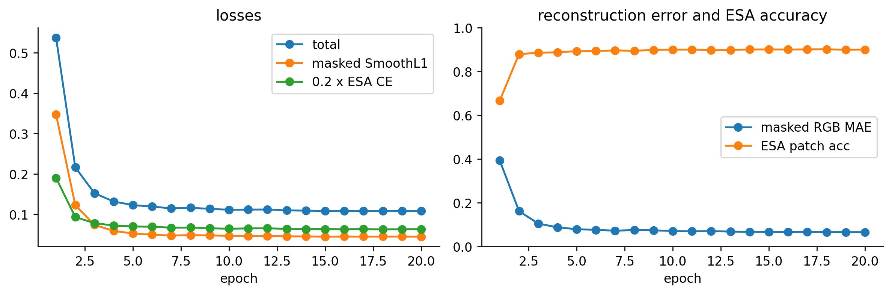

Building a Foundational EO Model for BharatEO: A Tiny WorldCover V0 Notebook
A pedagogical BharatEO-v0 experiment on real ESA WorldCover 2021 v200 pixels: 3-channel RGB MAE with L1 reconstruction, ESA patch classification, multi-ROI sampling, more chips, more epochs.
earth-observation
foundation-models
remote-sensing
bharateo
worldcover
pytorch
Author
Nipun Batra
Published
May 5, 2026
BharatEO-v0 with real ESA WorldCover pixels
This notebook is the smallest honest version of the BharatEO-v0 idea: use real Earth observation labels, split them into ViT-style tokens, mask most tokens, and train a tiny model with two objectives.
The data here is actual ESA WorldCover 10 m 2021 v200, read from the public Cloud Optimized GeoTIFFs that cover north India. There are no generated land-cover maps and no synthetic spectral signatures.
What this notebook demonstrates:
how a 128 x 128 Earth observation chip becomes 64 patch tokens,
how ESA WorldCover classes collapse into the BharatEO 8-class label space,
how masked RGB regression reconstruction works on a real EO chip,
how the auxiliary ESA patch classification objective works,
how many tokens the run consumes,
how the same scaffold extends to Sentinel-2 RGB/10-band pretraining.
What changed in this v0.2 pass:
Input is now 3-channel RGB rendered from the WorldCover class palette, instead of an 8-channel one-hot. This makes the reconstruction objective an L1 regression on real-valued pixels — the same shape of objective used in a Sentinel-2 MAE.
More data: chips are sampled from three different 2048 x 2048 ROIs inside the N27E075 tile (Delhi NCR, Shekhawati in Rajasthan, the Mathura/UP cropland belt) instead of a single Delhi crop.
More pretraining: a slightly bigger encoder runs for many more epochs over many more chips.
Important limitation: the input chip is still a colorized rendering of WorldCover classes, not Sentinel-2 reflectance. In the full BharatEO-v0 run, the input becomes 10 x 128 x 128 Sentinel-2 L2A reflectance; the only change to the pipeline is the source of the pixels. WorldCover stays as the weak patch-label supervision.
Data source
The notebook reads a small crop from this official WorldCover tile:
That COG covers 75E-78E, 27N-30N, including Delhi/NCR. The full tile is about 87 MB, but rasterio reads only the requested window. A local cache stores only the derived 2048 x 2048 ROI so repeated runs do not hit the network.
Attribution: ESA WorldCover project / Contains modified Copernicus Sentinel data (2021) processed by ESA WorldCover consortium.
Citation: Zanaga et al. 2022, ESA WorldCover 10 m 2021 v200, https://doi.org/10.5281/zenodo.7254221.
from pathlib import Pathimport osimport randomimport warningsos.environ.setdefault("MPLCONFIGDIR", "/private/tmp/matplotlib-cache")Path(os.environ["MPLCONFIGDIR"]).mkdir(parents=True, exist_ok=True)%matplotlib inline%config InlineBackend.figure_format ="retina"import numpy as npimport matplotlib.pyplot as pltimport rasteriofrom rasterio.windows import Windowimport torchimport torch.nn as nnimport torch.nn.functional as Ffrom torch.utils.data import Dataset, DataLoaderplt.rcParams.update({"figure.dpi": 120,"savefig.dpi": 240,"axes.spines.top": False,"axes.spines.right": False,})SEED =42random.seed(SEED)np.random.seed(SEED)torch.manual_seed(SEED)warnings.filterwarnings("ignore", message="enable_nested_tensor.*")device = torch.device("cpu")print("device:", device)
device: cpu
Chip geometry and token accounting
BharatEO-v0 uses 128 x 128 chips and 16 x 16 patches. That means every image has:
8 x 8 = 64 spatial tokens,
16 x 16 = 256 pixels per token,
75% masked tokens during pretraining.
For this RGB demo, each pixel is a 3-channel RGB color rendered from the WorldCover class palette. A token therefore has 3 x 16 x 16 = 768 raw values. In the real Sentinel-2 V0 the token has 10 x 16 x 16 = 2,560 reflectance values, but the rest of the pipeline is identical.
WorldCover v200 has 11 native class codes. For BharatEO-v0 we collapse them into 8 patch-label classes. This keeps the weak supervision compact while preserving the categories that matter for many India environmental tasks.
NATIVE_WORLDCOVER_CLASSES = {10: "Tree cover",20: "Shrubland",30: "Grassland",40: "Cropland",50: "Built-up",60: "Bare / sparse vegetation",70: "Snow and ice",80: "Permanent water bodies",90: "Herbaceous wetland",95: "Mangroves",100: "Moss and lichen",}NATIVE_TO_COLLAPSED_NAME = {10: "tree",20: "grass_shrub",30: "grass_shrub",40: "cropland",50: "built_up",60: "bare_sparse",70: "rare_other",80: "water",90: "wetland_mangrove",95: "wetland_mangrove",100: "rare_other",}CLASS_TO_ID = {name: i for i, name inenumerate(CLASS_NAMES)}NATIVE_TO_COLLAPSED_ID = np.full(256, CLASS_TO_ID["rare_other"], dtype=np.int64)for native_code, collapsed_name in NATIVE_TO_COLLAPSED_NAME.items(): NATIVE_TO_COLLAPSED_ID[native_code] = CLASS_TO_ID[collapsed_name]CLASS_COLORS = np.array([ [35, 132, 67], # tree [188, 189, 34], # cropland [127, 191, 123], # grass/shrub [215, 48, 39], # built-up [217, 164, 65], # bare/sparse [49, 130, 189], # water [44, 162, 95], # wetland/mangrove [189, 189, 189], # rare/other], dtype=np.float32) /255.0for native_code, native_name in NATIVE_WORLDCOVER_CLASSES.items(): collapsed = NATIVE_TO_COLLAPSED_NAME[native_code]print(f"{native_code:3d}{native_name:28s} -> {collapsed}")
10 Tree cover -> tree
20 Shrubland -> grass_shrub
30 Grassland -> grass_shrub
40 Cropland -> cropland
50 Built-up -> built_up
60 Bare / sparse vegetation -> bare_sparse
70 Snow and ice -> rare_other
80 Permanent water bodies -> water
90 Herbaceous wetland -> wetland_mangrove
95 Mangroves -> wetland_mangrove
100 Moss and lichen -> rare_other
Load three real WorldCover crops from the N27E075 tile
The N27E075 v200 tile covers 75-78 E, 27-30 N, so it spans Delhi NCR plus large parts of Haryana, Rajasthan, and western UP. We sample three 2048 x 2048 ROIs (each ~20 km wide) from inside this tile so the chip distribution is not just one city:
Delhi NCR (77.23 E, 28.61 N) — built-up dominant.
Shekhawati (75.80 E, 28.50 N) — semi-arid Rajasthan with bare soil and grass/shrub.
Mathura belt (77.50 E, 27.30 N) — UP cropland.
Each ROI is read with a rasterio window, so only the requested bytes are pulled from S3, and each derived ROI is cached locally.
def collapse_worldcover(native_map):return NATIVE_TO_COLLAPSED_ID[native_map]def labels_to_rgb(labels): arr = labels.detach().cpu().numpy() if torch.is_tensor(labels) else labelsreturn CLASS_COLORS[arr]def labels_to_rgb_input(labels):"""H x W int label map -> 3 x H x W float RGB tensor in [0, 1]."""return CLASS_COLORS[labels].transpose(2, 0, 1).astype(np.float32)def patch_mode_labels(label_map): blocks = label_map.reshape(GRID_SIZE, PATCH_SIZE, GRID_SIZE, PATCH_SIZE) blocks = blocks.transpose(0, 2, 1, 3).reshape(GRID_SIZE, GRID_SIZE, -1) out = np.zeros((GRID_SIZE, GRID_SIZE), dtype=np.int64)for r inrange(GRID_SIZE):for c inrange(GRID_SIZE): out[r, c] = np.bincount(blocks[r, c], minlength=NUM_CLASSES).argmax()return outcollapsed_rois = [collapse_worldcover(roi) for roi in roi_arrays]fig, axes = plt.subplots(2, len(collapsed_rois), figsize=(13, 7))for col, (meta, collapsed) inenumerate(zip(roi_metas, collapsed_rois)): pixel_counts = np.bincount(collapsed.ravel(), minlength=NUM_CLASSES) axes[0, col].imshow(labels_to_rgb(collapsed), interpolation="nearest") axes[0, col].set_title(f"{meta['name']}\nROI rendered as RGB") axes[0, col].axis("off") axes[1, col].bar(CLASS_NAMES, pixel_counts, color=CLASS_COLORS) axes[1, col].set_title("collapsed class pixels") axes[1, col].tick_params(axis="x", rotation=45) axes[1, col].set_ylabel("pixels")plt.tight_layout()

Build actual WorldCover chips
Each sample is a real 128 x 128 WorldCover crop, drawn from one of the three ROIs in round robin. The model input is a 3-channel RGB rendering. We also keep two label tensors used for diagnostics and for the auxiliary objective:
pixel labels: one collapsed ESA class per 10 m pixel,
patch labels: the dominant collapsed ESA class inside each 16 x 16 token.
class WorldCoverChipDataset(Dataset):"""Sample 128x128 WorldCover chips, render to RGB, attach labels. Chips are drawn from a list of ROIs in round-robin so the dataset is balanced across regions (urban / arid / cropland) rather than dominated by one ROI. """def__init__(self, roi_natives, n=DATASET_SIZE, chip_size=IMG_SIZE, seed=SEED, min_classes=2):self.samples = [] rng = np.random.default_rng(seed) attempts =0 target_per_roi = [n //len(roi_natives)] *len(roi_natives)for i inrange(n -sum(target_per_roi)): target_per_roi[i] +=1for roi_idx, (roi_native, want) inenumerate(zip(roi_natives, target_per_roi)): height, width = roi_native.shape collected =0while collected < want and attempts < n *400: attempts +=1 row =int(rng.integers(0, height - chip_size)) col =int(rng.integers(0, width - chip_size)) collapsed = collapse_worldcover(roi_native[row:row + chip_size, col:col + chip_size])if np.unique(collapsed).size < min_classes:continueself.samples.append(( labels_to_rgb_input(collapsed), collapsed.astype(np.int64), patch_mode_labels(collapsed), roi_idx, )) collected +=1iflen(self.samples) != n:raiseRuntimeError(f"Built {len(self.samples)} chips, expected {n}")def__len__(self):returnlen(self.samples)def__getitem__(self, idx): x, labels, patch_labels, _roi_idx =self.samples[idx]return torch.from_numpy(x), torch.from_numpy(labels), torch.from_numpy(patch_labels)dataset = WorldCoverChipDataset(roi_arrays)x0, labels0, patch_labels0 = dataset[0]roi_index_counts = np.bincount([s[3] for s in dataset.samples], minlength=len(roi_arrays))print("dataset chips:", len(dataset))print("chips per ROI:", dict(zip([m["name"] for m in roi_metas], roi_index_counts.tolist())))print("RGB input:", tuple(x0.shape), x0.dtype, f"min {x0.min().item():.3f} max {x0.max().item():.3f}")print("pixel labels:", tuple(labels0.shape), sorted(torch.unique(labels0).tolist()))print("patch labels:", tuple(patch_labels0.shape), sorted(torch.unique(patch_labels0).tolist()))
The top row shows the actual RGB chip the model sees. The bottom row shows the 8 x 8 patch labels that the auxiliary ESA classification head learns to predict from the same chip.
def rgb_chip_to_image(x):"""3 x H x W tensor -> H x W x 3 numpy in [0, 1] for imshow."""return x.detach().cpu().numpy().transpose(1, 2, 0)example_indices = [0, 1, 2, 3, 4, 5]fig, axes = plt.subplots(2, len(example_indices), figsize=(13, 5))for col, idx inenumerate(example_indices): x, _labels, patch_labels = dataset[idx] axes[0, col].imshow(rgb_chip_to_image(x), interpolation="nearest") axes[0, col].set_title(f"chip {idx} RGB") axes[1, col].imshow(labels_to_rgb(patch_labels), interpolation="nearest") axes[1, col].set_title("patch labels") axes[0, col].axis("off") axes[1, col].axis("off")plt.tight_layout()

Patch tokens
Patchification converts the image tensor into a sequence. For one RGB chip:
3 x 128 x 128 -> 64 x 768
The transformer sees the sequence length 64; the 768 raw RGB values per token are projected to the model width by a learned linear patch embedding.
def patchify(x, patch_size=PATCH_SIZE):"""B x C x H x W -> B x N x (C*p*p).""" b, c, h, w = x.shape p = patch_size gh, gw = h // p, w // preturn x.reshape(b, c, gh, p, gw, p).permute(0, 2, 4, 1, 3, 5).reshape(b, gh * gw, c * p * p)def patchify_rgb(x, patch_size=PATCH_SIZE):"""B x C x H x W -> B x N x C x p x p (kept structured for visualization).""" b, c, h, w = x.shape p = patch_size gh, gw = h // p, w // preturn x.reshape(b, c, gh, p, gw, p).permute(0, 2, 4, 1, 3, 5).reshape(b, gh * gw, c, p, p)def patchify_label_map(labels, patch_size=PATCH_SIZE):"""B x H x W -> B x N x p x p.""" b, h, w = labels.shape p = patch_size gh, gw = h // p, w // preturn labels.reshape(b, gh, p, gw, p).permute(0, 1, 3, 2, 4).reshape(b, gh * gw, p, p)tokens = patchify(x0.unsqueeze(0))tokens_rgb = patchify_rgb(x0.unsqueeze(0))[0] # N x 3 x p x ptoken_mean_rgb = tokens_rgb.mean(dim=(-1, -2)) # N x 3, mean color of each tokentoken_brightness = token_mean_rgb.mean(dim=1).reshape(GRID_SIZE, GRID_SIZE)token_color_var = tokens_rgb.var(dim=(-1, -2)).mean(dim=1).reshape(GRID_SIZE, GRID_SIZE)print("token tensor:", tuple(tokens.shape))print("first token mean RGB:", [f"{v:.3f}"for v in token_mean_rgb[0].tolist()])print("first token internal color variance:", float(tokens_rgb[0].var().item()))
token tensor: (1, 64, 768)
first token mean RGB: ['0.844', '0.222', '0.161']
first token internal color variance: 0.10034258663654327
fig, axes = plt.subplots(1, 3, figsize=(10, 3.2))axes[0].imshow(rgb_chip_to_image(x0), interpolation="nearest")axes[0].set_title("RGB chip")mean_rgb_grid = token_mean_rgb.reshape(GRID_SIZE, GRID_SIZE, 3).numpy().clip(0, 1)axes[1].imshow(mean_rgb_grid, interpolation="nearest")axes[1].set_title("token mean RGB")im = axes[2].imshow(token_color_var.numpy(), cmap="magma")axes[2].set_title("token color variance")plt.colorbar(im, ax=axes[2], fraction=0.046)for ax in axes: ax.set_xticks([]) ax.set_yticks([])plt.tight_layout()

Training objectives
This tiny model has two objectives.
1. Masked RGB regression
For each image, we mask 75% of patch tokens. The decoder predicts a 3-channel RGB value for every pixel in every token, and the reconstruction loss is computed only on masked tokens with a smooth L1 / Huber loss:
where p = 16 and M is the set of masked patches. This is the same objective used by Sentinel-2 MAEs (the only change there is that x is normalized reflectance instead of palette RGB).
2. ESA patch classification
Every token also predicts the dominant ESA class in its 16 x 16 patch:
epoch 01 | loss 0.5375 | rec SmoothL1 0.3471 | ESA CE 0.952 | masked MAE 0.3927 | ESA acc 0.667
epoch 02 | loss 0.2166 | rec SmoothL1 0.1230 | ESA CE 0.468 | masked MAE 0.1622 | ESA acc 0.879
epoch 03 | loss 0.1525 | rec SmoothL1 0.0741 | ESA CE 0.392 | masked MAE 0.1054 | ESA acc 0.885
epoch 04 | loss 0.1320 | rec SmoothL1 0.0593 | ESA CE 0.363 | masked MAE 0.0880 | ESA acc 0.888
epoch 05 | loss 0.1231 | rec SmoothL1 0.0528 | ESA CE 0.351 | masked MAE 0.0796 | ESA acc 0.893
epoch 06 | loss 0.1194 | rec SmoothL1 0.0500 | ESA CE 0.347 | masked MAE 0.0764 | ESA acc 0.893
epoch 07 | loss 0.1150 | rec SmoothL1 0.0478 | ESA CE 0.336 | masked MAE 0.0727 | ESA acc 0.896
epoch 08 | loss 0.1165 | rec SmoothL1 0.0489 | ESA CE 0.338 | masked MAE 0.0757 | ESA acc 0.894
epoch 09 | loss 0.1138 | rec SmoothL1 0.0481 | ESA CE 0.328 | masked MAE 0.0744 | ESA acc 0.898
epoch 10 | loss 0.1116 | rec SmoothL1 0.0469 | ESA CE 0.323 | masked MAE 0.0714 | ESA acc 0.900
epoch 11 | loss 0.1121 | rec SmoothL1 0.0466 | ESA CE 0.327 | masked MAE 0.0702 | ESA acc 0.900
epoch 12 | loss 0.1122 | rec SmoothL1 0.0465 | ESA CE 0.329 | masked MAE 0.0707 | ESA acc 0.897
epoch 13 | loss 0.1101 | rec SmoothL1 0.0458 | ESA CE 0.322 | masked MAE 0.0686 | ESA acc 0.898
epoch 14 | loss 0.1094 | rec SmoothL1 0.0457 | ESA CE 0.318 | masked MAE 0.0678 | ESA acc 0.900
epoch 15 | loss 0.1089 | rec SmoothL1 0.0452 | ESA CE 0.319 | masked MAE 0.0669 | ESA acc 0.901
epoch 16 | loss 0.1087 | rec SmoothL1 0.0453 | ESA CE 0.317 | masked MAE 0.0666 | ESA acc 0.900
epoch 17 | loss 0.1090 | rec SmoothL1 0.0453 | ESA CE 0.319 | masked MAE 0.0666 | ESA acc 0.901
epoch 18 | loss 0.1083 | rec SmoothL1 0.0452 | ESA CE 0.315 | masked MAE 0.0662 | ESA acc 0.901
epoch 19 | loss 0.1088 | rec SmoothL1 0.0453 | ESA CE 0.318 | masked MAE 0.0662 | ESA acc 0.899
epoch 20 | loss 0.1086 | rec SmoothL1 0.0450 | ESA CE 0.318 | masked MAE 0.0660 | ESA acc 0.900
epochs = [h["epoch"] for h in history]fig, axes = plt.subplots(1, 2, figsize=(10, 3.4))axes[0].plot(epochs, [h["loss"] for h in history], marker="o", label="total")axes[0].plot(epochs, [h["rec"] for h in history], marker="o", label="masked SmoothL1")axes[0].plot(epochs, [PATCH_LOSS_WEIGHT * h["esa"] for h in history], marker="o", label="0.2 x ESA CE")axes[0].set_title("losses")axes[0].set_xlabel("epoch")axes[0].legend()axes[1].plot(epochs, [h["rec_mae"] for h in history], marker="o", label="masked RGB MAE")axes[1].plot(epochs, [h["esa_acc"] for h in history], marker="o", label="ESA patch acc")axes[1].set_title("reconstruction error and ESA accuracy")axes[1].set_xlabel("epoch")axes[1].set_ylim(0, 1)axes[1].legend()plt.tight_layout()

Reconstruction examples
The model now does pixel-space RGB regression, so we can compare the target chip, the masked input it actually saw, and the predicted RGB image side by side. The fourth panel shows the per-pixel absolute error inside the masked tokens.
The auxiliary head is not just a side plot. It is the weak supervision signal that teaches each token a semantic land-cover summary. Below we evaluate patch predictions across the sampled chips using a fixed mask pattern.
The toy run is bigger now, but the accounting is the same as the serious run.
For this notebook (DATASET_SIZE = 384, EPOCHS = 20):
tokens per chip: 64
total patch-token presentations: ~492K
visible patch-token inputs at 75% masking: ~123K
masked patch-token reconstruction targets: ~369K
masked RGB pixel regression targets: ~94M
For a BharatEO-v0 pretraining run with 1M chips and 100 epochs:
total patch-token presentations: 6.4B
visible patch-token inputs at 75% masking: 1.6B
masked patch-token reconstruction targets: 4.8B
masked reflectance regression targets: 1.2T
That is why the small notebook is useful: the tensor shapes and losses are the same kind of machinery, just scaled down by four orders of magnitude.
What changes for Sentinel-2 BharatEO-v0?
Now that the input is already 3-channel pixel data and the reconstruction objective is already a smooth-L1 regression, the gap to a real Sentinel-2 MAE is small.
Keep:
the 128 x 128 chip size and 16 x 16 patch size (64 tokens),
the masked SmoothL1 reconstruction objective,
the ESA patch-label auxiliary objective,
the multi-ROI sampling and geography splits.
Change:
input from 3 x 128 x 128 palette RGB to 10 x 128 x 128 Sentinel-2 L2A reflectance (or 4 x 128 x 128 for an RGB+NIR start),
normalize each band by its dataset-wide mean / std before the MAE,
visual reconstruction panels show Sentinel-2 B4-B3-B2 true color and B8-B4-B3 false color,
dataset construction loops over Sentinel-2 + WorldCover pairs sampled across many tiles, not three crops in one tile.
The pedagogical point survives: WorldCover supplies the weak semantic objective; the optical sensor supplies the image signal for the real foundation encoder.